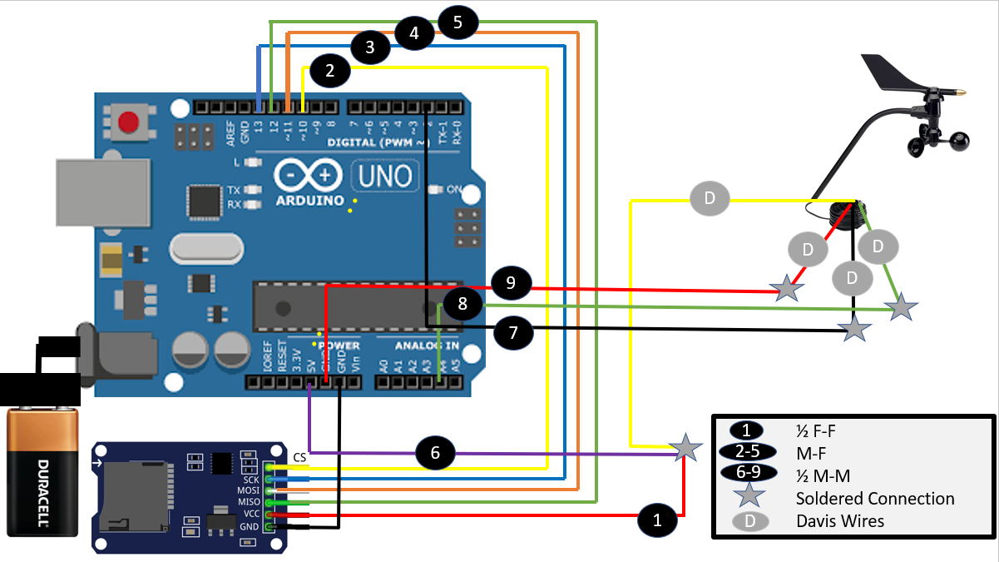
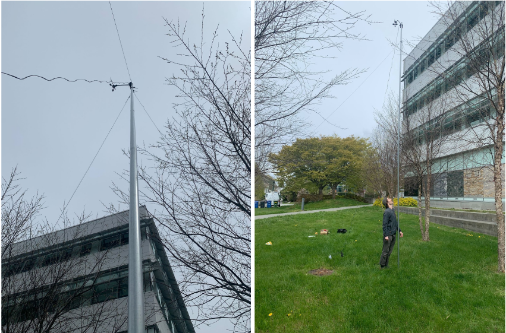

The Expendable Wind Sensor
The Expendable Wind Sensor#
The expendable wind sensors were adapted from cactus.io.
The wind sensors were designed to be placed within the path of prescribed wildfire path in order to capture flow dynamics within a wildfire. Thus, the wind sensors were built as cost effective as possible without minimizing accuracy.
The wind sensors are composed of:
Davis cup anemometer
Arduino UNO board
Arduino UNO SD card board extension
The full circuit diagram for the setup is shown below: 
This setup allows the Davis station to be placed at canopy height (4-6m) with the circuit board and sd card buried beneath ground for safe keeping. Since water is the main issue of concern when burying the circuit board under the ground, the e;ectronics were placed in tupperware containers with all holes sealed with shoe goo.
To place the sensors at canopy height, they are mounted onto two sections of 10ft aluminuim poles and secured via three guy wires to nearby trees.
